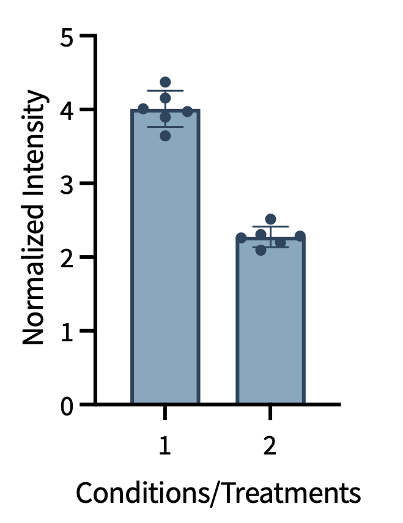
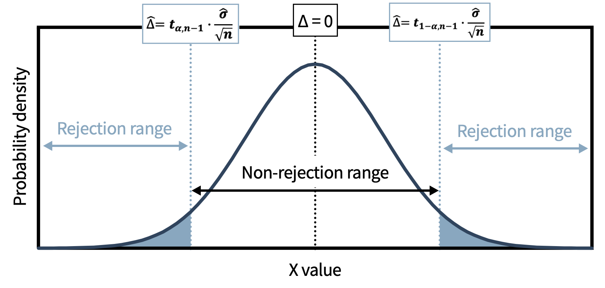

8. Hypothesis Testing
This session introduces the framework of hypothesis testing and, alongside it, how to run the most common test — the t-test — in Python with pingouin.
General imports for this lecture
Hypothesis Testing
Scientific questions often seek yes/no answers: Is the vaccine effective? Is catalyst A better than catalyst B?
Why can’t we just compare the mean values and see if one mean is larger than another? As we discussed in prior sessions, all experimental measurements have variance and uncertainty. Thus, we need a way to interpret the data including the variance and uncertainty.
Hypothesis testing provides a formal framework for answering such questions using data. Estimation can then add additional context to indicate by how much for these questions.
In hypothesis testing, there are two foundational parts:
- The working hypothesis (somewhat counterintuitively termed the “alternative hypothesis” or H₁)
- The null hypothesis (H₀, see below)
The Null Hypothesis
Hypothesis testing uses the null hypothesis (H₀), which is typically the negation of the working hypothesis.
If the alternative hypothesis (H₁) states that there is an effect, the null hypothesis states that there is NO effect. Examples of the construction of these hypotheses are below.
| Research question | Null hypothesis (H₀) | Alternative hypothesis (H₁) |
|---|---|---|
| Is plant growth affected by classical music? | Growth is not affected | Growth is affected |
| Is catalyst A better than catalyst B? | No difference in yield | Catalyst A gives higher yield |
| Is antibiotic A more toxic to S. aureus than antibiotic B? | No difference in toxicity | Antibiotic A is more toxic than antibiotic B |
Why would we do this? It might seem more natural to test the alternative hypothesis directly.
The reason for testing the null is rooted in the logic of falsification (Karl Popper): no number of confirmatory observations can prove a hypothesis correct, but a single contradictory observation can prove it incorrect. By testing H₀, we ask: “would these data be this extreme if there were truly no effect?” If the answer is “very unlikely” (p < threshold), we have grounds to reject H₀ in favor of H₁. This avoids confirmation bias and encourages seeking disconfirming evidence.
Logic: deductive vs. inductive
Deductive reasoning is a logical process in which a conclusion is drawn from a set of premises. If all the premises are true, then the conclusion must be true.
- Premise 1: All acids donate protons in aqueous solutions
- Premise 2: HCl is an acid.
- Deductive conclusion: HCl donates protons in aqueous solutions
Inductive reasoning is a logical process in which a broader, general conclusion is drawn from specific observations or examples. The conclusion is likely, but not certain.
- Observation 1: Na reacts vigorously with water.
- Observation 2: K reacts vigorously with water.
- Observation 3: Li reacts vigorously with water.
- Inductive conclusion: all alkali metals probably react vigorously with water.
Inductive reasoning is generally for hypothesis generation, and deductive reasoning is typically for hypothesis testing.
Type I and Type II Errors
When testing H₀, four outcomes are possible, including two types of error:
| H₀ is actually true | H₀ is actually false | |
|---|---|---|
| Reject H₀ | Type I error (false positive) | Correct decision |
| Fail to reject H₀ | Correct decision | Type II error (false negative) |
- Type I error rate (α): the probability of incorrectly rejecting H₀. Conventionally set at α = 0.05.
- Type II error rate (β): the probability of failing to detect a real effect. Related to power = 1 − β (covered in Session 9).
A common point of confusion:
Type I and Type II errors are defined conditional on H₀ being true or false, which we cannot observe directly. In practice, you usually don’t know which type of error, if any, occurred in a specific experiment.
What you control in the design phase is the probability of each type of error: α is set by the significance threshold, and power (1 - β) is controlled by sample size and effect size. Today, we will focus on the significance threshold, but in Session 9, we will discuss power: why it is important, how to evaluate it, and how to get more of it…
Mathematical tests to evaluate the null hypothesis
Across this session and the next six sessions, we will discuss mathematical methods for testing a null hypothesis. Like reactions in organic chemistry, these tests have names (often derived from the person who developed or popularized the test). It is important to remember the names of these tests and their purpose. Later in the course, you may find the Cheat sheet in the reference section of this website useful for reminding yourself of this information.
Today, we are going to focus on one statistical test called the t-test.
The t-Test
A common question that the t-test asks is: Are two outputs statistically different?

Formally, the t-test is used to evaluate a null hypothesis in which there are two quantities to be compared and the input data (independent variable) is categorical or discrete and the output data (dependent variable) is continuous.
The two quantities being compared can be either the means of two samples or the mean of a sample against a standard.
- One-sample t-test: compare the mean of a dataset to a known standard value (e.g. is this yield significantly above 50%?)
- Two-sample t-test: compare the means of two independent conditions
The t-test was developed by William Gosset (writing under the pseudonym “Student”) to monitor beer quality at the Guinness brewery in the early 1900s. The test is also sometimes referred to by a more formal name: the “Student’s t-test.”
What is the output of the t-test?
The t-test has an intermediate output (t-statistic) and a final output (p-value). Additionally, other parameters are important for interpreting the final output (p-value), including the descriptive statistics, CIs, as well as some topics that we will cover next session (effect size and power).
Before we get into how to interpret the intermediate and final outputs, let’s talk about these outputs and what they mean.
The t-Statistic
The t-statistic quantifies how many standard errors the observed difference is from zero (or from the null hypothesis value).
Mathematically:
- Let \(∆\) be the true difference between the known value (\(\mu\)) and the experimental mean (\(\mu_{1}\)): \(∆\) = \(\mu\) - \(\mu_{1}\).
- Let \(\hat{\Delta}\) be the estimated difference between the known value and the experimental mean: \(\hat{\Delta}\) = \(\hat{\mu}\) - \(\hat{\mu_1}\).
\[t_{stat} = \frac{\bar{\mu} - \bar{\mu}_1}{\sqrt{\dfrac{x\hat{\sigma}^2}{n}}} = \frac{\hat{\Delta}}{\text{SEM}_{\text{pooled}}}\]
Where \(x\) is 1 or 2 for the one-sample and two-sample t-test, respectively; and \(∆\) = \(\mu\) - \(\mu_{1}\)
Sometimes it is helpful to visualize what this means in graphical form.

A larger absolute t-statistic means the observed difference is more extreme relative to the variability in the data. The t-statistic and the distribution are then used to calculate the final output metric: the p-value.
The p-Value
The p-value is the probability of observing a test statistic as extreme or more extreme than the one calculated if the null hypothesis and the full statistical model are correct.
A p-value is NOT an error probability. It does not tell you the probability that H₀ is true, nor the probability that the result occurred by chance. It reports the probability of the data (or more extreme data) given the model, not the probability of the model given the data. This distinction is explored further in Session 9.
Common notation (but giving numbers is now preferred):
| Symbol | Threshold |
|---|---|
| * | p < 0.05 |
| ** | p < 0.01 |
| *** | p < 0.001 |
| **** | p < 0.0001 |
The t-test in practice
Usually, the workflow is as follows:
- **Generate the alternative and null hypotheses as well as set a threshold.
- Collect the data.
- Plot the data showing the samples to be compared.
- Inspect the plot visually.
- Inspect the descriptive statistics for the data: number of replicates (n), mean, median, stdev, fold change, and also CI.
- Select and perform the appropriate statistical test.
- Evaluate the results of the statistical test.
Below is an example of the workflow described above.
Alternative hypothesis: Condition 1 and 2 give different mean yields.
Null hypothesis: there is no difference in mean yield between conditions 1 and 2.
Significance threshold: the significance threshold is \(\alpha\) which is equal to 1 - desired percent confidence interval (such as 90%, 95%, 99%). A lower alpha is a stricter metric.
Plot the data and inspect
Report descriptive statistics and evaluate
Here instead of explicitly writing each of the calculations, we will use a tool from statsmodels.
Select and perform the appropriate statistical test
Here, we will use a new tool in python called pingouin, which we imported as pg. Please see the documentation for pingouin.
Just as a quick example, if you just wanted to perform a one-sample t-test the following code is suitable.
Evaluate the results of the statistical test
Our primary output is the p-value, but we need to revisit our threshold for significance \(\alpha\). In this example, our \(\alpha\) was 0.05 (95% CI).
If the p-value is below the significance cutoff, the probability of observing a test statistic at least as extreme as ours is low assuming the null hypothesis is true. Thus, we reject the null hypothesis, and our analysis supports the alternative hypothesis: the mean yields under conditions 1 and 2 are different.
If the p-value is equal to or above the significance cutoff, it did not clear the statistical threshold and the probability of observing a test statistic at least as extreme as ours, assuming the null hypothesis is true, is not small enough to warrant rejection of the null hypothesis. Thus, we fail to reject the null hypothesis, and we conclude that we did not find evidence to indicate that the mean yields under conditions 1 and 2 are different.
Based on this information, what is your conclusion of our worked example with conditions 1 and 2?
You can directly extract information from a row and column of a dataframe with the following: df_name.at["row", "column"]. An example is below
p_value = result.at["T_test", "p_val"]
print(f"p-value: {p_value:.4f}")
if p_value < 0.05:
print("p < 0.05 → reject H₀: the means differ.")
else:
print("p ≥ 0.05 → fail to reject H₀.")Variations of the t-Test
One-tailed vs. two-tailed:
- Two-tailed: the effect can operate in either direction (example: is A different from B, includes both better or worse?)
- One-tailed: the effect is being tested in only one direction (example: is A better than B?)
If you can legitimately simplify from a two-tailed to a one-tailed test, you halve the p-value for the favored direction — because all the rejection region is concentrated in one tail instead of two.
One-tailed tests are only justified when you have a strong scientific reason to test only one direction before seeing the data. The practical guideline: use two-tailed unless the study design explicitly committed to a directional hypothesis from the start.
If you switch to a one-tailed test after seeing the results of a two-tailed t-test, this is termed p-hacking (= very, very bad): you are using the data to choose the test, which invalidates the conclusions.
Paired vs. independent:
- Independent: no meaningful relationship between individual measurements in the two groups (e.g. the yields of two different catalysts in separate experiments).
- Paired: the same subject or sample is measured under both conditions (e.g. heart rate in the same 20 people before and after a presentation). Pairing reduces noise by controlling for between-subject variation.
Both one-sided vs. two-sided and paired vs. independent are controlled by single arguments. The only thing in the code that changes are the arguments. Please check the pingouin documentation.
Assumptions of the t-Test
Each statistical test that we will cover in this course holds certain assumptions. It is important to understand these assumptions, so that you know if you need to make variations to the statistical test or change to another statistical test.
The t-test assumes:
- The data are drawn from a normal (or t-) distribution
- The variances of the two groups are similar (homoscedasticity)
- The datasets are sufficiently large to accurately assess normality and homoscedasticity.
- The observations are randomly sampled and independent
In session 11, we will discuss what to do when assumptions of normality, variance, or sample size are not met.
In this session small datasets were used for comparisons owing to the online format. However, with sample sizes less than 20, a correction should normally be applied. We will apply that correction in a later lecture.
Some important critiques
Statistical Significance ≠ Scientific Significance
Statistical significance does not imply practical or scientific significance.
- A statistically significant result with a tiny effect size may be scientifically irrelevant
- A non-significant result does not mean there is no effect — it may mean the study lacked power to detect it
- Statistical significance depends on sample size: with enough replicates, even trivially small effects become “significant”
These limitations motivate the use of effect sizes and power analysis — the topics of Session 9, where we extend exactly this t-test workflow. The p-value should always be reported with context: sample size, effect size, and the actual numerical p-value (not just a significance symbol).
The fault in hypothesis testing
Hypothesis testing as conventionally practiced has been criticized for reducing scientific conclusions to a binary: “statistically significant” or “not statistically significant.” A movement in modern statistics advocates for using estimation (confidence intervals and effect sizes) to better convey the uncertainty and practical meaning of results. Estimation is not a replacement for hypothesis testing but a complement to it.
Goodhart’s Law (stated wittily by Marilyn Strathern):
When a measure becomes a target, it ceases to be a good measure.
p < 0.05 became the dominant target for publication in the 20th century, which incentivized practices–from subtle data selection to outright p-hacking–that inflated false positive rates. Being aware of this history helps you read the literature critically and practice statistics more fully.
Arbitrary thresholds
There is nothing particularly special about an \(\alpha\) of 0.05, but it is routinely used almost without thought. The pervasiveness of arbitrary thresholds is a common critique of hypothesis testing. Because this course is an introductory course, we will stick to common thresholds, so that you gain familiarity with standard practices. However, I will try to indicate when a threshold is arbitrary, AND if you continue in statistical thinking for any later career or hobby, I would encourage you to explore more alternative statistical methods (some of which are mentioned in Session 14).
Further Reading (Session 9 preview)
The following paper is recommended reading and directly addresses the limitations of p-values:
Statistical tests, P values, confidence intervals, and power: a guide to misinterpretations
However, many of the topics in the paper have not yet been covered, so only the p-value and CI sections are relevant right now.
- Hypothesis testing tests the null hypothesis (falsification logic); H₀ = no effect.
- Type I error = α (false positive); Type II = β (false negative); power = 1 − β.
- The t-test compares means (one-sample / two-sample / paired / one-sided / two-sided) and assumes normality, equal variance, independence.
- The p-value is the output of hypothesis tests like the t-test, and this should be interpreted in reference to the pre-determined significance threshold \(\alpha\).
- More information than the p-value is still necessary to formulate the final conclusions, and we will cover this in the next session.
In person
TBD